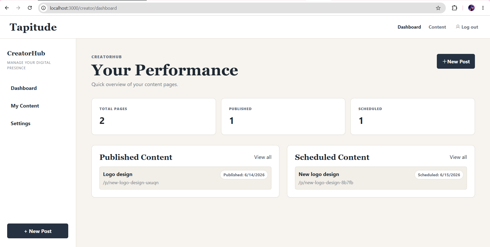
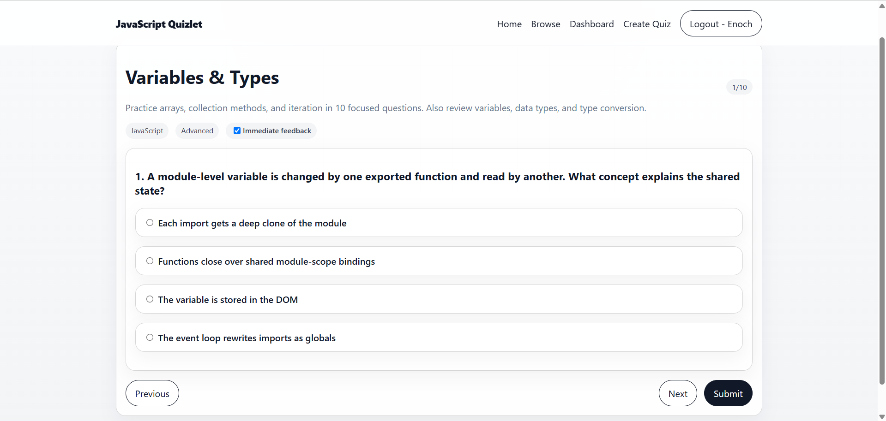
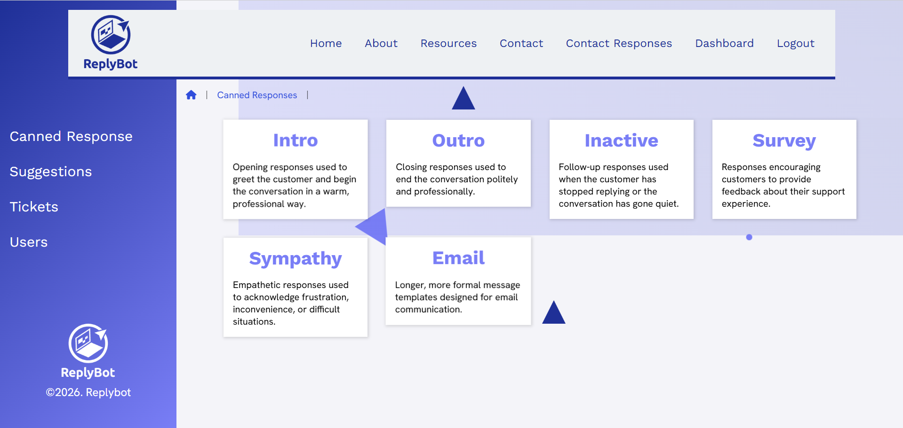
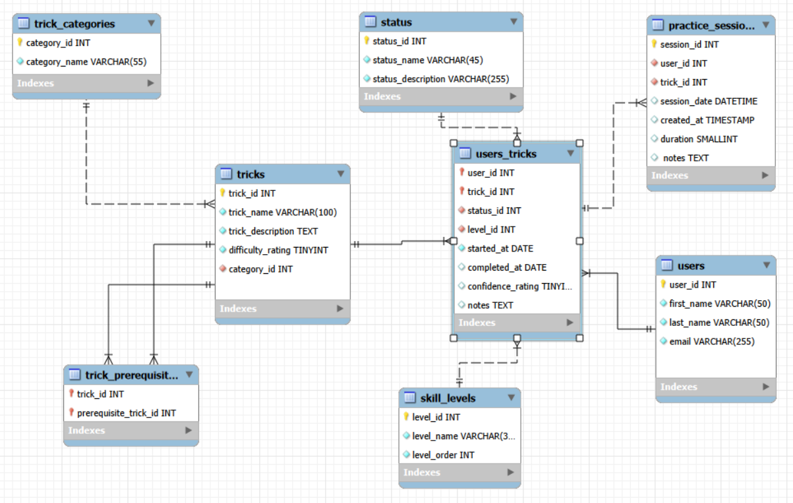

Computer science · AI engineering · Full-stack web
Learning. Solving Problems. Leading.
I’m Enoch Olayemi, a computer science student interested in AI engineering and full-stack development. I enjoy building useful web experiences and exploring how intelligent systems can solve meaningful problems.
Selected work
Projects built to solve real problems.
Four projects that demonstrate my work across full-stack development, user-focused applications, support workflows, and relational data.

01 · Creator platformTapitude
A creator-focused application for managing, customizing, and publishing digital content pages accessed through unique URLs or NFC chips.

02 · Learning platformJavaScript Quizlet
A full-stack quiz platform with authentication, quiz creation and management, search, scoring, and public or private quizzes.

03 · Support workflowReplyBot
A server-rendered application that helps support teams manage canned responses, tickets, suggestions, and multi-stage service workflows.

04 · Data systemsStride
A SQL database for tracking roller-skating tricks, progression, practice sessions, prerequisites, and skill levels.
Where I’m headed
Building at the intersection of AI and the web.
My major in Computer Science gives me a broad foundation in software and problem solving. I’m complementing it with a minor in AI Engineering and a certificate in Full-Stack Web Design and Development.
I’m especially interested in connecting intelligent systems to useful products—combining AI concepts, backend logic, reliable data, and accessible interfaces into experiences people can actually use.
- AI Engineering
- Full-Stack Development
- JavaScript
- Node.js
- Express
- SQL
- Accessible CSS
Let’s build something useful
Have a project or opportunity in mind?
I’m always glad to talk about web development, software projects, and opportunities to learn with a thoughtful team.